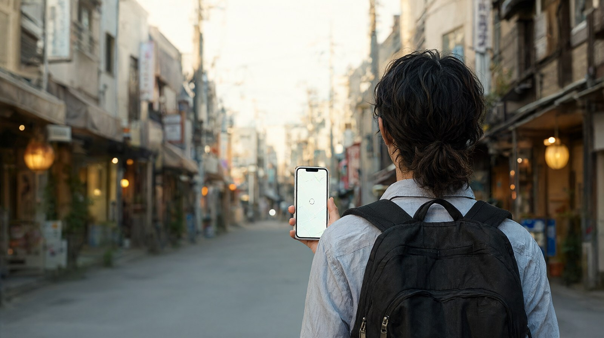

일본에서 휴대폰 데이터가 안 될 때 순서대로 점검하는 방법과, 끊겼을 때를 대비한 가족 연락 방법을 정리했습니다.
데이터가 안 될 때 대처법
개요
일본에서 데이터가 갑자기 안 되면 지도, 번역, 교통 검색, 가족 연락이 한꺼번에 막힙니다. 원인은 대개 설정, 로밍 제공량 소진, 회선 선택, 기기 문제 중 하나입니다. 아래 순서대로 쉬운 것부터 점검하면 대부분 현장에서 정리됩니다. 점검 순서와 메뉴 위치는 일반적인 안내이며, 기종마다 메뉴 이름이 다르니 설정 화면에서 확인하세요. 공식 출처가 있는 내용에는 출처를 달았습니다.
점검 순서
- 비행기 모드를 켰다가 끄고, 그래도 안 되면 휴대폰을 다시 시작합니다. (일반 안내)
- 상단 표시줄에 통신사 이름과 신호가 잡히는지 봅니다. 신호가 전혀 없으면 지하, 산간, 건물 안일 수 있으니 장소를 옮겨 봅니다. 외곽이나 산간 지역은 신호가 약할 수 있어 JNTO 도 렌탈 와이파이를 권합니다 (JNTO).
- 로밍을 쓰는 경우: 설정에서 데이터 로밍이 켜져 있는지 확인합니다. KT 약관 기준으로 일부 로밍 상품은 제공량을 다 쓰면 데이터 로밍이 자동 차단되고, 차단을 풀고 더 쓰면 패킷당 일반 데이터 로밍 요금이 적용됩니다 (KT 약관). 가입한 통신사의 문자 안내와 남은 제공량을 먼저 확인하세요.
- eSIM 을 쓰는 경우: 설정의 모바일 데이터 항목에서 eSIM 회선이 켜져 있고 데이터 회선으로 선택되어 있는지 확인합니다. 한국 번호 회선의 데이터 로밍을 끄지 않으면 로밍 요금이 청구될 수 있으니, 사용하지 않는 쪽 회선의 데이터는 꺼 둡니다. (일반 안내, 기종별 메뉴 확인 필요)
- 유심을 쓰는 경우: 휴대폰의 통신사 잠금이 풀려 있어야 합니다 (JNTO). 접속 정보(APN) 설정이 필요한 상품이면 판매처 안내문의 값을 그대로 입력합니다. 유심을 뺐다가 다시 끼우는 것도 시도합니다.
- 포켓와이파이를 쓰는 경우: 배터리 잔량, 전원, 기기 표시등을 확인하고 한 번 껐다 켭니다. 그래도 안 되면 대여 업체 고객센터에 연락합니다. 대여 업체 연락처는 계약 확인 메일에 적혀 있는지 미리 보세요. (일반 안내)
- 위 방법이 안 되면 임시로 무료 와이파이를 씁니다. 주요 공항 터미널, 대형 호텔, 일부 편의점, 패스트푸드점, 카페에서 쓸 수 있지만 가입 절차가 필요할 수 있고 속도가 불안정할 수 있습니다 (JNTO). 결제나 로그인이 필요한 작업은 공용 와이파이에서 피하세요. (일반 안내)
끊겼을 때를 대비한 준비
- 지도와 번역 데이터를 출발 전에 내려받아 오프라인으로 쓸 수 있게 합니다. (일반 안내)
- 숙소 이름과 주소, 전화번호를 스크린샷으로 저장하고, 가족 모두에게 공유합니다.
- 입국 서류 QR 은 Visit Japan Web 의 오프라인 이용 기능을 출발 전에 확인합니다 (Visit Japan Web 조작설명서). 자세한 등록 순서는 입국·세관을 보세요.
- 가족이 흩어졌을 때 만날 장소와 시간을 정합니다. 아이에게는 보호자 연락처를 적은 카드나 팔찌를 줍니다. (일반 안내)
- 가족 중 한 명만 데이터가 되는 구성이라면 그 사람의 휴대폰을 연락 거점으로 정합니다. 통신 구성 방법은 통신을 참고하세요.
도움을 받을 수 있는 곳
| 상황 | 연락처 | 출처 |
|---|---|---|
| 관광 정보, 사고, 질병, 자연재해 지원 (영어, 중국어, 한국어, 24시간 연중무휴) | 일본 안에서 050-3816-2787, 해외에서 걸 때 +81-50-3816-2787 | 일본정부관광국 방문자 핫라인 |
| 경찰 긴급 | 110 | 일본정부관광국 |
| 화재, 구급 긴급 | 119 | 일본정부관광국 |
| 분실물 센터 (경찰) | 0570-550-142 | 일본정부관광국 |
| 한국 영사콜센터 | 국내에서 02-3210-0404. 해외에서는 +82-2-3210-0404(유료), +82-2-2100-0404(무료)로 안내됨 | 인천국제공항 출국체크사항 |
전화가 필요한데 데이터가 안 될 때를 대비해, 위 번호를 휴대폰 연락처나 종이에 미리 적어 두세요. 통화 가능 여부와 로밍 통화 요금은 통신사별로 확인 필요.
자주 하는 실수
- 데이터 로밍과 현지 회선을 함께 켜 둔 채 로밍 요금이 나옵니다.
- 로밍 제공량이 소진돼 자동 차단된 것을 모르고 기기 고장으로 오해합니다 (KT 약관).
- 통신사 잠금이 걸린 휴대폰에 현지 유심을 꽂습니다 (JNTO).
- 지도와 숙소 정보를 모두 온라인에만 두어서 끊기면 길을 잃습니다.
- 비상 연락처와 접속 정보를 휴대폰 안에만 저장해 두어 배터리가 나가면 못 씁니다.
관련 글
공식 출처
- 와이파이와 통신 (일본정부관광국): https://www.japan.travel/en/plan/wifi-and-connectivity
- 일본 방문자 핫라인 (일본정부관광국): https://www.japan.travel/ko/plan/hotline/
- 5G 서비스 이용약관의 로밍 조항 (KT): https://corp.kt.com/attach/board/BS00000005/10192/KT+5G+%EC%84%9C%EB%B9%84%EC%8A%A4+%EC%9D%B4%EC%9A%A9%EC%95%BD%EA%B4%80.pdf
- 출국체크사항, 영사콜센터 (인천국제공항): https://www.airport.kr/ap_ko/887/subview.do
- 조작설명서 (Visit Japan Web): https://www.vjw.digital.go.jp/manual/main/visitjapanweb_manual_ko.html